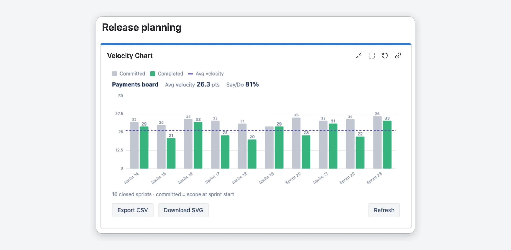
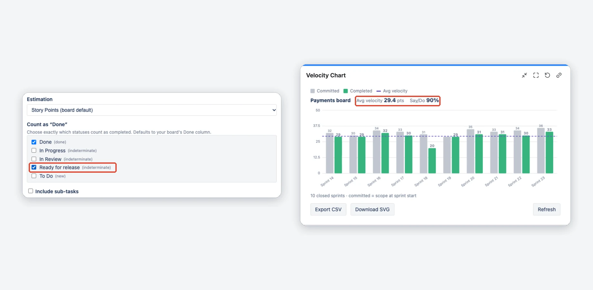
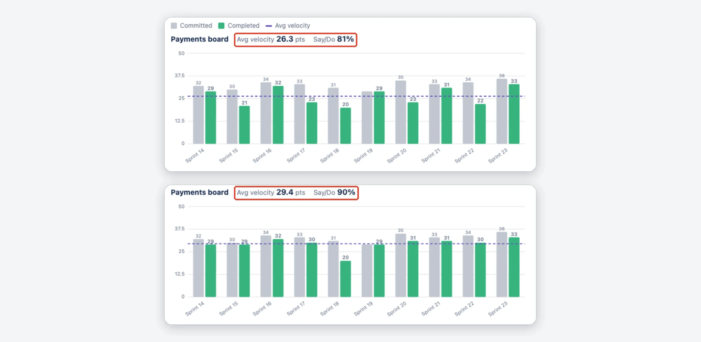
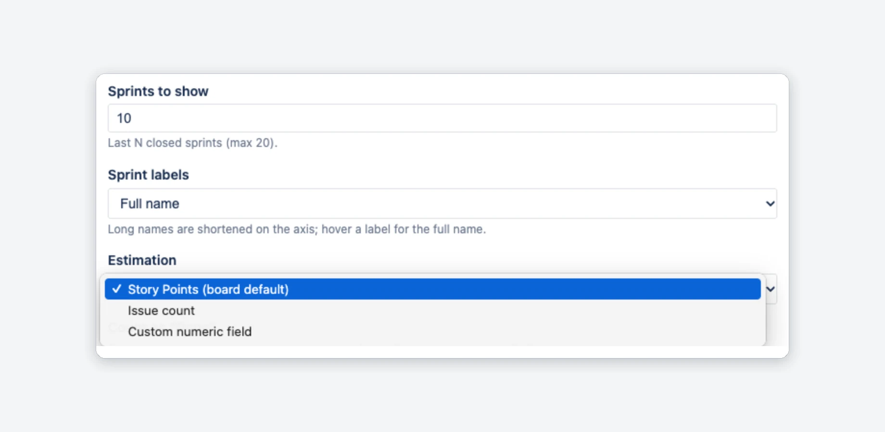
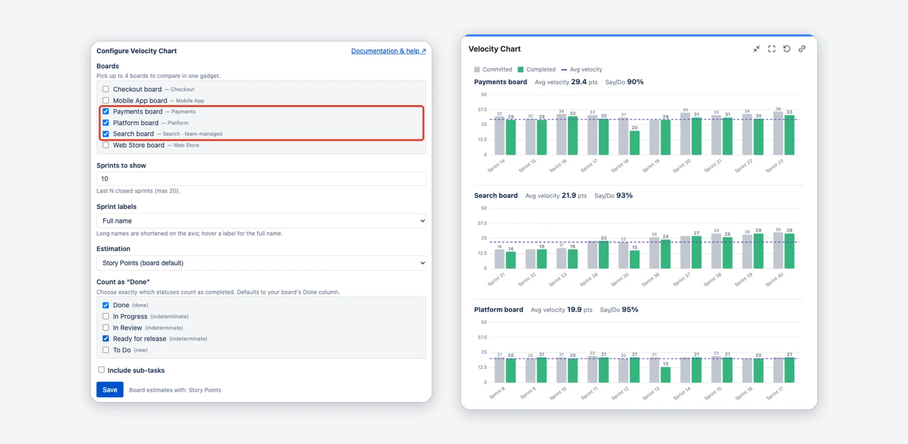
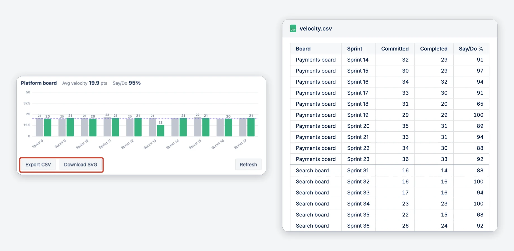

Velocity Chart for Jira — Documentation
Sprint velocity on any Jira dashboard, with your own Definition of Done.
Quick start
- Install Velocity Chart from the Atlassian Marketplace.
- Open a Jira dashboard → Add gadget → search for Velocity Chart → Add.
- Click the gadget's pencil / Edit, tick a Scrum board with at least one closed sprint and click Save.
- Optional (Pro): choose which statuses count as done, how to estimate, and up to four boards.
On this page
Overview
Velocity Chart adds a sprint velocity chart to a Jira dashboard as a gadget. For each closed sprint of a Scrum board it shows committed (grey) and completed (green) work, a dashed line for the average and, in Pro, the say/do ratio.
- Works on company-managed and team-managed Scrum boards.
- You decide which statuses count as done (Pro).
- Estimate by Story Points, issue count or a custom numeric field (Pro).
- Up to four boards in one gadget, and CSV and SVG export (Pro).

Add the gadget
The gadget needs a Scrum board with at least one closed sprint.
- Install Velocity Chart for Jira from the Marketplace (Get it now → your Jira site).
- Open a Jira Dashboard → Add gadget → search for Velocity Chart → Add.
- Click the gadget's pencil / Edit icon, tick a Scrum board and click Save.
What the two bars mean: How velocity is calculated.
Which boards are listed?
- Scrum boards, company- and team-managed, in projects you can browse in Jira; the picker reads the first 200 boards of the site. Team-managed boards are tagged “team-managed”.
- With more than 7 boards a search box filters by board name, project name or project key. Ticked boards stay visible while you search.
- Classic Kanban boards have no sprints and are not listed. A team-managed Kanban board may be listed but shows no closed sprints.
- New boards appear immediately; the picker is not cached.
Settings
Everything is set in the gadget's Edit view. Without Pro the gadget follows the board's own settings.
| Setting | What it does |
|---|---|
| Boards | The Scrum board to chart. PRO Tick up to 4 boards to compare. |
| Sprints to show | How many recent closed sprints to show (default 7). Free: 1–7, Pro: 1–20. |
| Sprint labels | Full name or Numbers only (the first number in the sprint name). Long names are shortened on the axis; hover a label for the full name. |
| Estimation PRO | Story Points (board default), Issue count or Custom numeric field. |
| Count as “Done” PRO | The statuses that count as completed. |
| Include sub-tasks PRO | Off by default. Turn it on to count sub-tasks too. |
Your Definition of Done PRO
Your Definition of Done decides what counts as completed. Tick the statuses your team calls done, for example Ready for release next to Done. Each status shows its status category in brackets.
- Pre-ticked are the statuses of your board's Done column. As long as you keep that selection, exactly these count, as in Jira's own velocity report.
- Once you change the selection, exactly the ticked statuses count.

Before and after: the same board with two definitions
Done only (top: 26.3 points, 81% say/do) and Done plus Ready for release (bottom: 29.4 points, 90% say/do).

Estimation PRO
Story Points uses the board's own estimation field and falls back to the standard story points field if that one is empty. Issue count counts every issue as 1. Custom numeric field lets you pick another numeric custom field.
More about estimation and sub-tasks
- Issues without a value count as 0, except with Issue count.
- Without Pro the gadget uses the board's setting: its estimation field, or the issue count when the board estimates by issue count.
- Sub-tasks are left out unless you tick Include sub-tasks.

How velocity is calculated
Each closed sprint gets two bars. In short: grey is what the team took on at the start, green is what is done now.
- Committed (grey): the estimates of the issues that were in the sprint when it started. The app reads this from each issue's sprint history. Issues added after the start do not count here.
- Completed (green): the estimates of the sprint's issues that were in a Done status when the sprint closed, by your Count as “Done” selection. The app reads this from each issue's status history, as Jira's own velocity report does.
- Avg velocity (dashed line): the average velocity, that is the mean of the green bars over the sprints shown.
- Say/Do (Pro): completed ÷ committed for each sprint. Next to the board name is the average over the sprints that committed something; the values per sprint are in the CSV export.
Carried-over issues count as completed once. If an issue was not finished, moved to the next sprint and finished there, it counts as committed in both sprints but as completed only in the sprint in which it was finished. Jira keeps the closed sprint in the issue's Sprint field; the app looks at the status the issue had when that sprint closed. An issue reopened after the close still counts in the sprint in which it was done.
The numbers can still differ from Jira's own velocity report, for example when issues were removed from a sprint before it closed or when you count other statuses as done (details below).
More details and limits
- Issues added after the start count toward Completed when they are done, but not toward Committed. Say/do can therefore be above 100%.
- Issues removed from the sprint before it closed are not counted at all, so Committed is lower when scope was removed mid-sprint.
- Up to 200 issues are read per sprint.
- Results are cached for up to 5 minutes; Refresh recalculates right away.
Multiple boards PRO
Tick up to four Scrum boards to compare teams in one dashboard slot. Each board gets its own chart, average and say/do, all with the same estimation and Definition of Done.

Good to know
- Count as “Done” lists the statuses of the first ticked board; the ticked names apply to every board.
- When you tick a fifth board, the first ticked board in the list is unticked.
- Velocity depends on each team's own estimation scale, so use it to follow trends rather than to rank teams.
- Without an active subscription a gadget with several boards shows only the first one.
Export PRO
Two buttons below the chart save the numbers and the pictures.
- Export CSV downloads
velocity.csv, a CSV file with board, sprint, committed, completed and say/do % for every shown sprint of all boards in the gadget (UTF-8). - Download SVG saves each board's chart as an SVG image with a white background, for slides and reports.

Free vs Pro
There is one plan: the app is free for up to 10 users, and larger teams get a free trial. Pro features are on while your site has an active subscription, the trial included. Per-user pricing is on the Marketplace listing.
Without an active subscription, for example after the trial, the gadget keeps working in the reduced Free mode: one board, up to 7 sprints, the board's estimation and its Done column. Pro features return as soon as a subscription is active again.
Free and Pro side by side
| Capability | Free | Pro |
|---|---|---|
| Single-board velocity chart + average line | ✓ | ✓ |
| Company- & team-managed Scrum boards | ✓ | ✓ |
| Sprint labels (full name / numbers) | ✓ | ✓ |
| Sprints shown | up to 7 | up to 20 |
| Configurable Definition of Done | The board's Done column | ✓ |
| Estimation mode (issue count / custom field) | board default | ✓ |
| Include sub-tasks | — | ✓ |
| Say/do ratio | — | ✓ |
| Up to 4 boards in one gadget | — | ✓ |
| CSV & SVG export | — | ✓ |
FAQ & troubleshooting
Open a question for the answer.
It says “No closed sprints on this board yet”.
The board has no completed sprint yet. Start and complete a sprint, or pick a board that already has closed sprints. Classic Kanban boards have no sprints and are not listed.
The bars are empty or zero.
Your issues are estimated in a different field than the board's default. Open the gadget's Edit view, go to Estimation and choose the field your team actually uses (for example Story point estimate), or switch to Issue count. Estimation, Done statuses and sub-task handling are Pro settings.
A board is missing from the picker.
Only Scrum boards (company- and team-managed) in projects you can browse are listed, taken from the first 200 boards of the site. Classic Kanban boards are excluded because they have no sprints. New boards appear immediately.
It says “You do not have permission to view this board”.
The gadget only shows boards whose project you can browse in Jira, so ask your Jira admin for access to the board's project. The message can also appear for a board you can open if Jira did not answer the check, for example during a short outage. Reload the dashboard after a couple of minutes and the app checks again.
It says “Could not read sprints” or “Could not read the issues of … sprints”.
Jira did not answer the request, usually a short rate limit or outage. Nothing is cached for such a result, so click Refresh or reload the dashboard after a minute.
The numbers look out of date.
Results are cached for up to five minutes. Click Refresh in the gadget to recalculate right away.
Does an issue that was carried over count in both sprints?
Only as committed. Completed counts the issues that were done when the sprint closed, as in Jira's own velocity report. An issue that was carried over unfinished counts as completed only in the sprint in which it was finished.
How is this different from Jira's built-in velocity report?
Jira's report lives on the board's Reports page and uses that board's own Done column and estimation setting. Velocity Chart is a dashboard gadget: you choose which statuses count as Done and how to estimate, can chart up to four boards in one gadget, and get an average say/do ratio and CSV/SVG export (Pro).
Does Velocity Chart support team-managed projects?
Yes. Team-managed Scrum boards appear in the board picker tagged “team-managed” and use the same calculation as company-managed boards.
Does the app change my Jira issues?
No. Velocity Chart is strictly read-only and requests no write permissions. It only reads sprint data to draw the chart and caches the computed numbers in Atlassian Forge Storage. See the Security Policy.
Support
Questions, bugs or feature requests? We typically respond within 1–2 business days (Monday to Friday).
Email: support@janekbehrens.de
Bug reports & feature requests: github.com/janekbehrens/velocity-chart-for-jira-issues
Support page: common questions and what to include in a bug report
Legal: Privacy Policy · Terms of Service · Security Policy